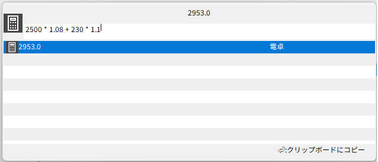
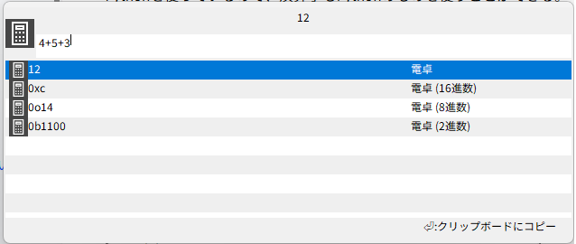

電卓
入力欄に数式を入れると、計算結果をコメント欄に表示する。
Enterキーを押下すると、計算結果をクリップボードにコピーできる。
利用するにはPythonが必要。(設定画面)

利用可能な演算子
演算子 |
意味 |
|---|---|
+ |
加算 |
- |
減算 |
* |
乗算 |
/ |
除算 |
// |
切り捨て除算 |
** |
べき乗 |
<<,>> |
シフト演算 |
% |
剰余 |
& |
AND |
| |
OR |
^ |
XOR |
関数
その他、Python標準関数のうち、計算結果が文字列/数値になるものと、mathモジュールの関数を使用することができる。

基数別表示
計算結果が整数になる場合は、2進数/8進数/10進数/16進数それぞれの結果が表示される。
